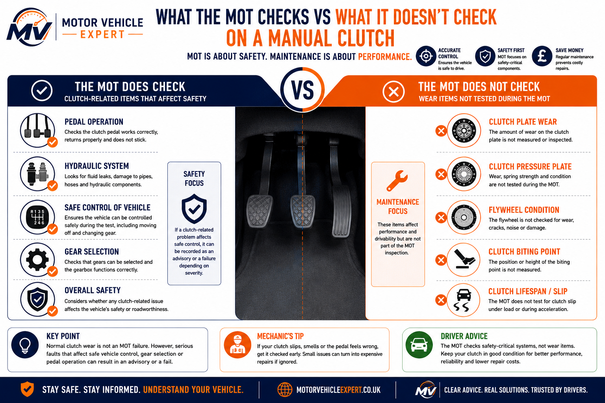
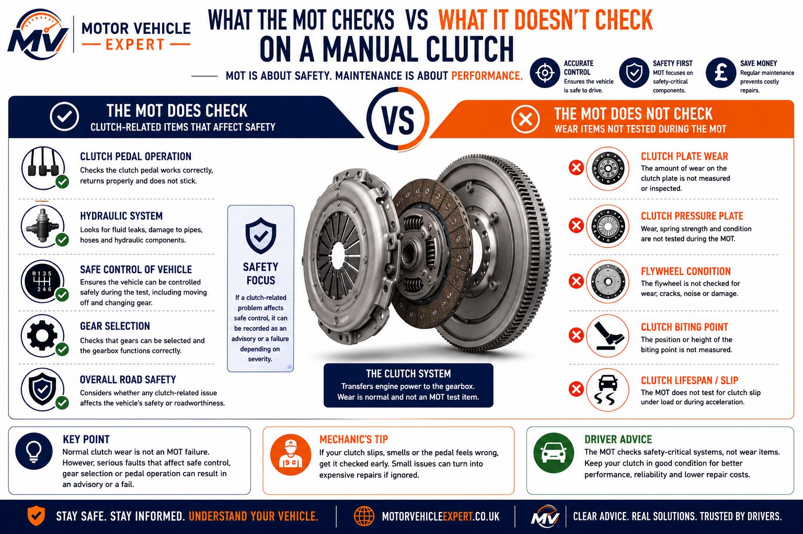

Does an MOT check the clutch?
No. An MOT does not include a full clutch wear inspection. The tester does not measure clutch plate thickness, remaining clutch life, clutch biting point or whether the clutch will soon need replacing.
A car can pass an MOT with a worn clutch, high biting point or early clutch slip, provided the vehicle can still be controlled safely and remains roadworthy during the test.
Clutch wear
Normal clutch wear is not directly measured during an MOT.
Safe control
A clutch fault matters if it affects the driver's ability to control the vehicle safely.
Repair timing
A slipping clutch should be checked before it becomes severe, even if it is not always a direct MOT fail.
A clutch can be worn and still pass an MOT. The key difference is whether the fault is only a drivability issue or whether it affects safe vehicle control.
What Does The MOT Check Around Clutch Operation?
The MOT is not a clutch wear test. It does not measure clutch plate thickness, biting point or remaining clutch life. The important MOT question is whether the vehicle can be operated safely and controlled properly during the inspection.
A worn clutch can still pass an MOT. A clutch fault only becomes more relevant when it affects safe vehicle movement, pedal operation, gear selection, hydraulic operation or the tester's ability to complete the inspection safely.
Safe Vehicle Movement
The tester may need to move the vehicle during the inspection. If the clutch prevents smooth or safe movement, the issue becomes relevant.
Clutch Pedal Operation
A clutch pedal that sticks, fails to return or cannot be operated normally may affect safe control and should be inspected before the MOT.
Hydraulic Fluid Leaks
A leaking clutch master cylinder, slave cylinder or hydraulic line can reduce clutch operation and should be repaired before test day.
Selecting Gears
The gearbox is not assessed in detail, but the tester must be able to select gears and move the vehicle safely during the inspection.
Mounts & Drivetrain
Some symptoms that feel like clutch faults are caused by worn engine mounts, gearbox mounts or excessive drivetrain movement.
Engine Mount MOT Guide →Overall Safety
The MOT is judging minimum roadworthiness, not whether the clutch is new, worn or likely to need replacement soon.

This infographic shows the difference between limited clutch-related observations during an MOT and the deeper checks carried out during a full workshop clutch inspection.
Many vehicles pass an MOT with clutches that are already worn. The MOT confirms minimum roadworthiness at the time of the test; it does not predict future reliability. If the clutch slips under load, the pedal feels abnormal or gears become difficult to engage, arrange proper diagnosis even if the car recently passed its MOT.
What Clutch Items Are Not Normally Checked During An MOT?
Many clutch faults are important when diagnosing drivability problems or planning future repairs, but they are not part of a standard MOT inspection. The MOT does not dismantle the clutch assembly or assess how much service life remains in clutch components.
A vehicle can pass its MOT with a worn clutch, a high biting point or reduced clutch life. The MOT only requires the vehicle to remain safe, controllable and roadworthy during the inspection—it does not predict when a clutch will need replacing.
Clutch Plate Thickness
Not CheckedThe clutch is not dismantled during an MOT, so friction material thickness and clutch wear cannot be measured.
Remaining Clutch Life
Not CheckedAn MOT cannot estimate how many miles the clutch has left before replacement becomes necessary.
High Biting Point
Usually Not CheckedA high biting point often indicates wear, but it is not normally an MOT inspection item on its own.
Minor Clutch Slip
Usually Not CheckedLight clutch slip may not be identified during an MOT unless it becomes severe enough to affect safe vehicle control.
Clutch Judder
Usually Not CheckedJudder when pulling away is generally treated as a drivability concern rather than a direct MOT inspection item.
Replacement Planning
Not AssessedThe MOT does not predict whether the clutch will require replacement next month or next year.
Dual Mass Flywheel Wear
Not CheckedInternal flywheel wear, springs and damping components are not inspected unless they create an obvious safety issue.
Pedal Weight & Feel
Not MeasuredPedal effort, bite height and general clutch feel are not used to determine normal clutch wear during an MOT.
Full Clutch Diagnosis
Separate InspectionA complete clutch diagnosis requires road testing and workshop inspection to confirm clutch, hydraulic, flywheel or gearbox faults.

This diagram illustrates the internal clutch components hidden inside the bell housing. These parts are not dismantled or inspected during a standard MOT, which is why normal clutch wear cannot be assessed as part of the test.
One of the biggest MOT myths is that a passed MOT means the clutch is in good condition. In reality, the MOT confirms minimum roadworthiness on the day of the inspection. A clutch can pass the MOT yet still be close to the end of its service life, so slipping, judder, burning smells or poor gear engagement should always be investigated by a workshop.
Clutch Symptoms To Check Before An MOT
These symptoms do not automatically mean your vehicle will fail its MOT, but they are clear warning signs that the clutch or a related drivetrain component should be inspected. If the fault affects acceleration, gear selection, pedal operation or safe vehicle control, it should be diagnosed before test day.
A clutch problem becomes much more serious when it affects safe control of the vehicle. If the car struggles to pull away, slips badly under acceleration, smells strongly of burning or refuses to engage gears properly, arrange diagnosis before continuing to drive.
Clutch Slipping
Risk: Medium to HighEngine speed increases but the vehicle fails to accelerate properly, particularly when climbing hills or accelerating in higher gears. Severe slip can affect safe control.
Complete Clutch Slip Guide →Burning Clutch Smell
Risk: MediumA burning smell after hill starts, reversing or slow traffic usually indicates excessive clutch heat or clutch slip. Repeated overheating can damage the flywheel.
High Biting Point
Risk: Low to MediumA high biting point often indicates clutch wear, although it is not measured during an MOT inspection. Watch for slip under load.
Difficulty Selecting Gears
Risk: Medium to HighHard gear changes may be caused by clutch hydraulics, gearbox linkage, clutch drag or internal gearbox faults. If gears cannot be selected safely, the MOT may be affected.
Clutch Pedal Sticking
Risk: HighA clutch pedal that sticks down or fails to return normally may indicate hydraulic or mechanical problems affecting safe operation.
Clutch Judder
Risk: MediumJudder when pulling away may be caused by clutch wear, flywheel faults, worn mounts or contamination of the clutch friction surface.
Engine Revs Without Acceleration
Risk: HighIf engine speed rises but road speed does not, excessive clutch slip is one of the most common causes on manual vehicles and should not be ignored.
Knocking Or Excessive Movement
Risk: MediumMovement when pulling away may indicate worn engine mounts, gearbox mounts or excessive drivetrain movement rather than clutch failure.
Engine Mount MOT Guide →Clutch Replacement
Risk: Costly repairIf clutch slip is confirmed after diagnosis, replacement of the clutch assembly may be required. Confirm the cause before authorising expensive work.
Typical UK Repair Costs →A slipping clutch, sticking pedal or burning smell does not automatically mean the clutch itself has failed. Hydraulic faults, worn engine mounts, gearbox linkage problems and dual mass flywheel wear can produce similar symptoms. A proper diagnosis before replacing parts often saves significant repair costs.
If clutch slip only appears in higher gears or when driving uphill, the clutch may be close to the end of its service life even if town driving still feels normal. This is worth checking before an MOT because the fault usually gets worse rather than better.
Can A Clutch Problem Fail An MOT?
Most clutch wear does not directly result in an MOT failure because the clutch itself is not a specific inspection item. However, clutch-related faults can become important if they affect safe vehicle control, prevent the tester from moving the vehicle or create a roadworthiness concern.
A worn clutch is not necessarily an unsafe clutch. Many vehicles pass their MOT with clutches nearing the end of their service life. The concern is whether the fault compromises safe operation during the inspection.
Normal Clutch Wear
MOT Result: PassGeneral clutch wear and reduced service life are not measured during an MOT inspection.
High Biting Point
MOT Result: Usually PassA high biting point often suggests clutch wear but is not normally an MOT failure by itself.
Light Clutch Slip
MOT Result: Usually PassMinor clutch slip may not affect the MOT, but it usually becomes progressively worse with continued driving.
Recognise Clutch Slip →Severe Clutch Slip
MOT Result: Possible FailureIf severe clutch slip prevents safe vehicle movement or proper control, it can affect the MOT inspection.
Pedal Sticking
MOT Result: Possible FailureA clutch pedal that sticks or fails to return normally can affect safe vehicle control and should be repaired promptly.
Hydraulic Fluid Leak
MOT Result: Possible FailureLeaks affecting the clutch hydraulic system can reduce clutch operation and create wider safety concerns.
Cannot Select Gears
MOT Result: Possible FailureIf the tester cannot safely select gears or move the vehicle, the inspection may not be completed.
Burning Clutch Smell
MOT Result: Usually PassA burning smell is not an MOT failure itself, but repeated overheating often indicates excessive clutch slip or wear.
When Can A Clutch Fail An MOT?
Detailed GuideRead our dedicated guide explaining the situations where clutch-related faults may influence an MOT result.
Can A Clutch Fail MOT? →An MOT is not designed to judge how worn a clutch is. It confirms whether the vehicle is safe to operate on the day of the inspection. A clutch that slips occasionally may still pass, but severe slip, hydraulic faults or poor pedal operation should always be repaired before the test to avoid safety problems and more expensive repairs later.
Clutch Problems, MOT Relevance and Repair Priority
This comparison helps separate normal clutch wear from faults that may affect roadworthiness or safe vehicle control.
| Clutch issue | Checked by MOT? | May affect MOT? | Repair priority |
|---|---|---|---|
| Normal clutch wear | No | Usually no | Monitor symptoms |
| High biting point | No | Usually no | Inspect if slipping |
| Light clutch slip | No direct test | Sometimes | Repair soon |
| Severe clutch slip | No direct test | Yes, if control is affected | Repair before MOT |
| Sticking clutch pedal | May be noticed | Yes | Immediate inspection |
| Hydraulic fluid leak | May be relevant | Yes | Repair immediately |
| Cannot select gears | May prevent test | Yes | Diagnose before MOT |
| Dual mass flywheel wear | No direct test | Only if safety/control affected | Diagnose if noisy or juddering |
The most important difference is whether the fault is hidden wear or a control problem. Hidden wear is usually not an MOT issue, but anything that affects safe movement, gear engagement or pedal operation should be checked before test day.
What Should You Check If The Clutch Feels Wrong?
A clutch that suddenly feels different does not automatically mean your vehicle will fail its MOT, but it should never be ignored. Identifying problems early can improve safety, prevent breakdowns and reduce the risk of more expensive repairs developing before your test.
If your clutch has recently started slipping, feels unusually heavy, struggles to select gears or produces a burning smell, arrange an inspection before your MOT. Diagnosing a small fault early is often far cheaper than replacing damaged clutch or flywheel components later.
Pre-MOT Clutch Checklist
- ✓Check for clutch slip during acceleration.
- ✓Notice whether the biting point has become unusually high.
- ✓Make sure the clutch pedal returns smoothly.
- ✓Inspect for hydraulic fluid leaks.
- ✓Check that all gears engage normally.
- ✓Listen for knocks or excessive drivetrain movement.
- ✓Watch for burning clutch smells.
- ✓Test the clutch on an incline if safe to do so.
- ✓Investigate sudden changes in clutch feel.
- ✓Repair serious faults before the MOT.
Recommended Diagnostic Order
Many clutch symptoms are caused by related drivetrain components. Confirm the fault before replacing expensive parts.
- 1Confirm the symptom during normal driving.
- 2Inspect the hydraulic system for leaks.
- 3Check clutch pedal operation.
- 4Assess gear selection.
- 5Inspect engine and gearbox mounts.
- 6Consider flywheel or linkage faults.
- 7Replace the clutch only when diagnosis confirms wear.
Know When To Stop Driving
If the clutch slips badly, the pedal sticks down, gears cannot be selected or the vehicle struggles to move safely, avoid unnecessary driving until the fault has been inspected.
Diagnose Before Replacing Parts
Many clutch complaints are caused by hydraulic faults, engine mounts or gearbox linkage problems. Correct diagnosis can prevent unnecessary clutch replacement.
Give Your Vehicle The Best Chance
Fix fluid leaks, sticking pedals, severe clutch slip and obvious drivability faults before your MOT to avoid problems during the inspection.
One of the most expensive mistakes drivers make is replacing the clutch before confirming the fault. Hydraulic failures, worn engine mounts, damaged gearbox linkages and dual-mass flywheel problems can all produce symptoms that feel like a worn clutch. A proper diagnosis before authorising repairs can save hundreds of pounds while ensuring the real fault is fixed before the MOT.
Clutch Repair Cost UK
Clutch repair cost depends on the vehicle, gearbox layout, labour time, parts quality, whether the flywheel needs replacing and whether the fault is actually caused by clutch hydraulics, gearbox linkage or engine mount movement.
Do not assume every clutch symptom means a complete clutch replacement. Hydraulic leaks, slave cylinder faults, master cylinder issues, gearbox linkage problems and worn mounts can create symptoms that feel similar to clutch wear.
Clutch Inspection
£40–£120A basic inspection can confirm whether the problem is clutch slip, hydraulics, gearbox linkage, mounts or another drivetrain fault.
Clutch Hydraulic Repair
£100–£400+Slave cylinder, master cylinder or hydraulic line faults can cause poor pedal feel, gear selection issues or clutch drag.
Clutch Replacement
£400–£1,200+A worn clutch normally requires gearbox removal, making labour a major part of the final repair cost.
Full Clutch Cost Guide →Clutch & Dual Mass Flywheel
£700–£1,800+If the dual mass flywheel is worn, noisy or damaged, replacing it with the clutch can significantly increase the total bill.
Gearbox Linkage Repair
£80–£400+Poor gear selection may come from linkage, selector problems or hydraulic faults rather than the clutch plate itself.
Engine Or Gearbox Mount Repair
£100–£500+Knocking, juddering or excessive movement when pulling away can be caused by worn mounts rather than clutch wear.
A badly slipping clutch usually gets worse, not better. Continuing to drive can increase heat, damage the flywheel and turn a clutch-only job into a more expensive clutch and flywheel repair.
Confirm The Fault First
Ask the garage to confirm whether the clutch is slipping, dragging, leaking hydraulically or being affected by another drivetrain issue.
When To Replace Soon
Severe slipping, burning smells, poor hill starts or inability to accelerate properly usually mean the clutch needs urgent attention.
Buying Risk
A slipping clutch during a test drive can be a strong negotiation point because replacement costs can be high.
The cheapest clutch repair is the one diagnosed correctly the first time. Before authorising replacement, confirm whether the fault is clutch wear, hydraulic failure, gearbox linkage, worn mounts or flywheel damage. This avoids replacing expensive parts unnecessarily.
Related MOT, Clutch and Gearbox Guides
Continue through the Motor Vehicle Expert MOT question cluster, clutch fault guides and repair cost resources. These guides help explain whether a problem is an MOT issue, a drivability concern or a repair cost risk.
Clutch MOT Guides
Clutch Symptoms
Repair & Buying Advice
This section is the main navigation hub for related clutch, gearbox, MOT and repair cost content. Keeping most related links here avoids repeating the same links too often throughout the main article.
What The MOT Checks Compared With A Full Clutch Inspection
The MOT only looks at minimum roadworthiness. A full clutch inspection goes much further by diagnosing internal wear, hydraulics, flywheel condition and drivability symptoms.
What The MOT May Notice
- ✓Vehicle cannot be moved safely.
- ✓Clutch pedal sticks or fails to return.
- ✓Hydraulic leaks affect operation.
- ✓Gears cannot be selected safely.
- ✓Fault affects roadworthiness.
What The MOT Does Not Measure
- ✓Clutch plate thickness.
- ✓Remaining clutch life.
- ✓Normal biting point height.
- ✓Dual mass flywheel wear.
- ✓Future clutch replacement timing.
If the issue is normal wear inside the clutch, the MOT usually will not assess it. If the issue affects safe control, movement, gear selection or hydraulic operation, it should be repaired before the MOT.
Does MOT Check Clutch? FAQs
These are the questions UK drivers ask most often about clutch wear, slipping clutches, pedal faults and how clutch problems relate to the MOT inspection.
Does an MOT check the clutch?
No. An MOT does not include a detailed clutch inspection. Testers do not measure clutch plate wear, remaining clutch life or the clutch biting point. The vehicle simply needs to remain safe and controllable throughout the inspection.
Can a slipping clutch fail an MOT?
Usually not directly. However, severe clutch slip that prevents safe vehicle control or stops the tester from moving the vehicle safely may become relevant during the inspection.
Does the MOT check the clutch biting point?
No. A high biting point often suggests clutch wear, but it is not a specific MOT inspection item and is not normally measured during the test.
Can a clutch pedal fault fail an MOT?
Possibly. If the clutch pedal sticks, fails to return correctly or affects safe vehicle operation, the fault should be repaired before the MOT.
Can a burning clutch smell fail an MOT?
The smell itself is not an MOT failure item, but it usually indicates excessive clutch slip or overheating, both of which should be investigated.
Should I repair clutch slip before an MOT?
Yes. Even if the vehicle might still pass, severe clutch slip normally becomes progressively worse and can eventually affect safe control of the vehicle.
Can a worn clutch still pass an MOT?
Yes. Many vehicles pass their MOT with clutches nearing the end of their service life because normal clutch wear is not directly inspected during the test.
Does the MOT check the gearbox as well?
No. The gearbox is not dismantled or inspected in detail during an MOT. However, gearbox or clutch faults that prevent safe operation of the vehicle may still affect the inspection.
Can I drive to an MOT with a slipping clutch?
A minor clutch issue may not stop you reaching your MOT appointment, but if the clutch slips badly, struggles to engage gears or makes the vehicle difficult to control, it should be repaired before driving further.
Will an MOT advisory mention clutch wear?
Not normally. Clutch wear itself is not an MOT inspection item, so testers do not usually record advisories simply because the clutch is approaching the end of its service life.
Does clutch judder fail an MOT?
Not by itself. Clutch judder is generally treated as a drivability issue rather than a direct MOT failure item, although any underlying fault affecting safe vehicle control should still be investigated.
Do automatic cars have clutch-related MOT checks?
Automatic transmissions use different clutch systems depending on the gearbox design, but the MOT still focuses on safe vehicle operation rather than internal transmission wear.
This guide answers whether an MOT checks the clutch and explains the difference between normal clutch wear and faults that affect roadworthiness. For further reading, use the Related Guides section above to explore clutch diagnosis, repair costs and other MOT inspection topics.